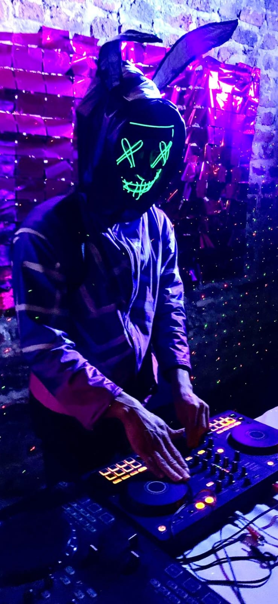

Galeria

.jpeg)
.jpeg)
ELECTRONIC · HOUSE · TECHNO
Justin Genesis nació como DJ productor en el año 2015, originario de Colombia (Bogotá), con una gran pasión por la música electrónica como house, tech house y otras ramas del género, así como la guaracha. Ha forjado su camino como DJ con una energía inigualable que lo ha llevado a tocar en grandes lugares de la ciudad de Bogotá, destacando escenarios como THEATRON y diferentes discotecas reconocidas. También ha tenido la oportunidad de compartir escenario con grandes artistas como Fumaratto, presentándose en la ciudad de Medellín en la discoteca Jennylao, gracias a organizadores de eventos locales. Su trayectoria se caracteriza por una dedicación inquebrantable y un estilo distintivo, lo que le ha permitido formar parte de la asociación de DJ más reconocida del país, AsoDJ, como miembro oficial.
A lo largo de mi carrera, como DJ he desarrollado diversos proyectos musicales enfocados en la producción, explorando géneros como house, tech house, techno y progressive. Mi objetivo principal es crear experiencias sonoras que conecten con el público y generen una atmósfera única en cada presentación
Presto mis servicios como DJ para eventos privados y corporativos, como fiestas, bodas, discotecas y celebraciones. Ofrezco sets personalizados según el público, con mezclas en vivo y ambientación musical para crear una experiencia única en cada evento.
 Instagram: justingenesis oficial
Instagram: justingenesis oficial
 WhatsApp: +34 600 954 975
WhatsApp: +34 600 954 975